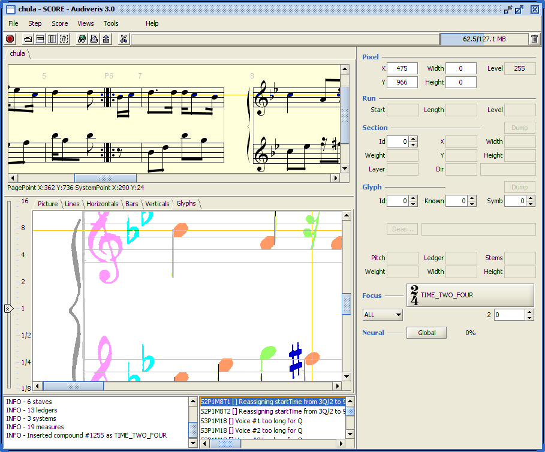
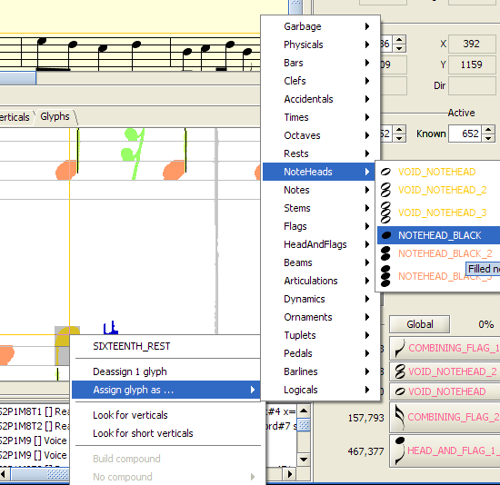
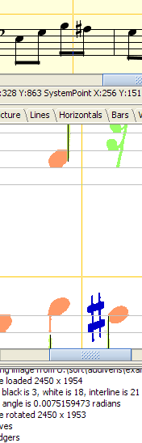
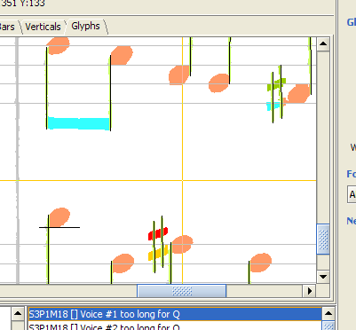
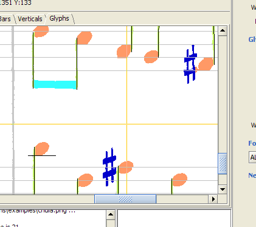
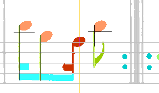
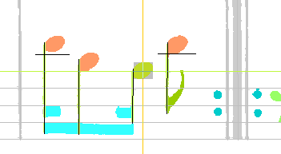
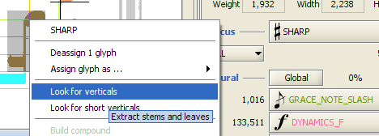
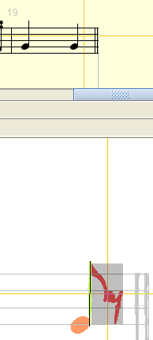
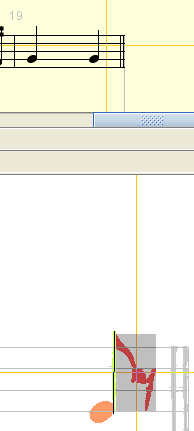

Purpose of this document is to describe a very simple yet realistic use of Audiveris, so that you can get acquainted with some of its major features.
$> java -jar dist/audiveris-3.0.jar
or if for example you need more memory:
$> java -Xms128m -Xmx256m -jar dist/audiveris-3.0.jar
From the File menu, select the Open Sheet item and in the dialog box which appears, select the chula.png file located in the /examples folder.
This loads the image out of the selected file, and the application window now looks like the following:
From the Step menu, directly select the SCORE step.
Audiveris will execute all the steps until the selected one. The user interface will evolve in parallel to the final view as in following picture.
Notice that:
The upper part of the window displays a synthetic view of the resulting score, as translated from the extracted glyphs. If you can't see this view, make sure it is not collapsed, by dragging down the split line located just above the tabs.

You can notice that the time signature of the second staff is wrong: instead of a 2/4 signature, it displays a C (cut-time).
In such few cases, Audiveris will have misunderstood the music information, and the user will need to make corrections on the fly.
Here are all the corrections needed on the Chula sheet:
Note that it's a good habit to always check the time signature first, since a wrong value there has major consequences on the rest of the score.

Another way to select these 2 glyphs, is to click on the first one with the left mouse button, and while pressing the Control key, clicking on the second glyph.
Notice also that, by selecting these 2 glyphs as a whole, the Neural board on the right proposes TIME_TWO_FOUR as its best evaluation. Just click on this button in the Neural board, and the assignment is done.
We now use the "Error pane", which is located in the middle at the bottom of the screen.


 Fixed As: 
[Note: This hierarchy of submenus is really ackward, we consider moving to a more user-friendly selecting mechanism for a new release]
 Fixed As: 
The errors pane is now empty. This does not mean there is no error left, but rather than the program has not detected any other error!
 Fixed As: 

 Fixed As:

Fixed As:

|
Now that we are rather satisfied with the final translation, we can write the result into a MusicXML file. In the Score menu, we select the Store in Xml item which presents a dialog box to choose a target file. We finally click on the Record button, et voila! |
Here is the content of chula.xml: |
|
You can decide to store the script of your actions related to 'chula' sheet, by selecting the Store script item in the File menu. Select the location, and your script is written by default as chula.script file. If you close the current sheet without saving your script first you will be asked for saving the related script of your actions:
|
Here is the content of chula.script: |
You can replay any script, by simply selecting the Open script item in the File menu, and choosing a script file.
For example, just choose the script you've just stored, and watch 'chula' image be reloaded, the various steps performed, and the series of your manual actions done again. From that point on, you can make additional actions through the user interface, these actions will be added at the end of the sheet script. It's a convenient way to work again on a previous session for example. If you are curious, have a look at the 'chula.script' file, which is a simple xml file where all your actions are easily recognized.
There is no playback embedded with Audiveris (at least for the time being). But we can simply take another tool, for example you can download a free demo version of Finale 2007.
Within Finale application, in the File menu, use its Music XML | Import item, and get a display of our score. Then, press Play button, and listen!